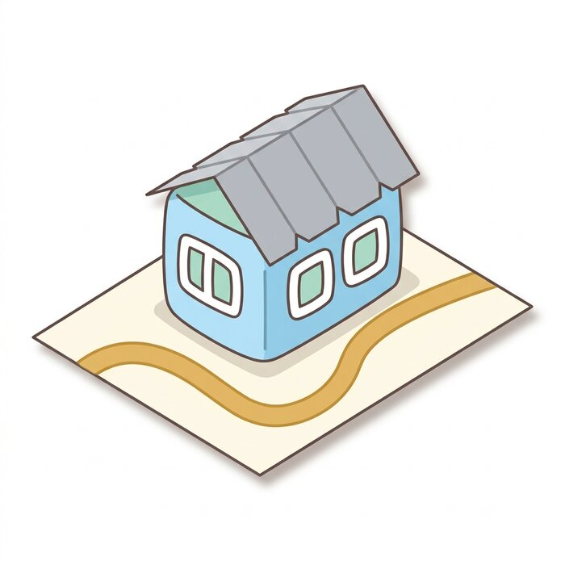

5학년 2학기 · 5-2-2[6사06-02] 광복과 한국전쟁이 사회·생활에 미친 영향(참고 요약)준비물: 가위 · 풀 · 자
실선 = 자르기 점선 = 접기 회색 = 풀칠
1
바깥 실선을 따라 전체를 오려요
2
모든 점선을 자로 눌러 접어요
3
상자 모양으로 세우고 회색 탭에 풀칠해 붙여요
4
2쪽 받침판의 분계선 위에 세우면 완성!
몽당분필 날쌤초등사회 마무리활동
군사 분계선 받침판 — 받침판 · 안내 팻말 (2/2)
회담장은 분계선 위에 걸쳐 서 있어요. 남과 북, 어느 쪽에도 속하지 않는 자리랍니다.
5학년 2학기 · 5-2-2받침판은 오리기만, 팻말은 반으로 접기
실선 = 자르기 점선 = 접기

완성 예시
');">
완성한 모습 — 분계선 위에 걸친 회담장
더 튼튼하게! 얇은 종이라면 오리기 전에 도안을 마분지(과자 상자도 좋아요)에 풀로 붙였다가 함께 오려 보세요.
받침판은 접지 않고 오리기만 하면 됩니다.
만들고 나서 — 이야기해 봐요
① 회담장은 왜 분계선 위에 걸쳐 지었을까요? 남과 북 어느 쪽 땅도 아닌 자리에서 만나야 했기 때문이에요.
② 방탈출에서 찾은 암호 0727은 무슨 날이었나요? 그날 이 자리에서 무슨 일이 있었는지 짝에게 설명해 보세요.
③ 정전 협정은 전쟁을 끝낸 것이 아니라 멈춘 약속이에요. 오늘 우리에게 어떤 의미인지 이야기해 봐요.